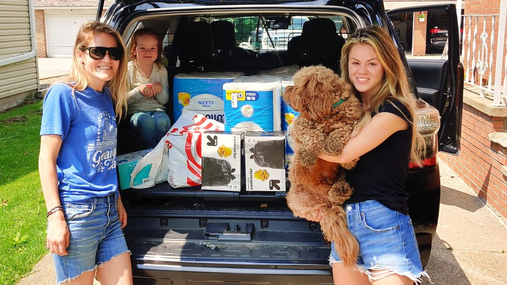

Mobile uploads
From left to right, this is:
Margie, Iris, Ryder, Hayley.
Margie saw a post on Facebook about our homeless community. She asked me what she could do to help. I told her we were in serious need of trash bags and toilet paper. Within a day she and her family brought SO MUCH toilet paper and SO MANY trash bags.
I show you a lot of painful things. But you also need to see all the incredibly good things. The kindness and compassion of complete strangers is more than I can sometimes handle. People like this family, and so many other people, continually break my heart with extreme love. The beauty in the world is every bit as mind-blowing as the difficult parts of the world.